คู่มือการใช้งานระบบนับสต็อก
Stock Audit System — จัดตามลำดับ Data Flow · DFD Level 0–1 · ขั้นตอน F0–F7 ตั้งแต่ SKU Master การนับ Match Dashboard และ ER / Data Flow
★ บทนำ
คู่มือฉบับนี้จัดตาม ลำดับ Data Flow — อ่าน DFD Level 0–1 ก่อน แล้วตามขั้น F0→F7 แต่ละขั้นอธิบายหน้าเว็บและการไหลของข้อมูล
inventory_counts = หลักฐานผลนับ · Match ไม่แก้ counted_qty · ปรับยอดที่ Book/stock_adjustments เท่านั้นDFD DFD Level 0 — Context Diagram
✓ สร้างแผนภาพให้แล้ว — ไฟล์ assets/manual/dfd-level0.svg
แผนภาพบริบท (Context) แสดงระบบ Stock Audit เป็นหนึ่งกระบวนการกลาง (P0) ทำหน้าที่รับ-ส่งข้อมูลกับผู้ใช้งาน ไฟล์ Excel และฐานข้อมูล Supabase
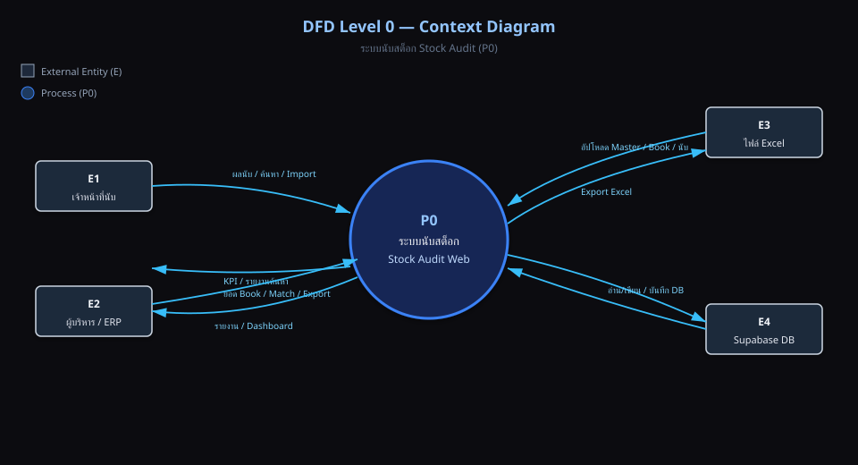
| สัญลักษณ์ | ความหมาย |
|---|---|
| E1 ผู้นับสต็อก | สแกน/Import ผลนับผ่านหน้าเว็บ |
| E2 ผู้ดูแล/ERP | ตั้งรอบ อัปโหลด Book ดู Match Export ไป ERP |
| E3 ไฟล์ Excel | SKU Master · ผลนับ · ยอด Book ก่อนนับ |
| E4 Supabase | ที่เก็บข้อมูลถาวรทุกตาราง |
| P0 | เว็บแอป Stock Audit ทั้งหมด |
รายการ Data Flow หลัก (Level 0)
| ลูกศร | ข้อมูล |
|---|---|
| E1 → P0 | ผลนับ, สแกน, Import |
| P0 → E1 | KPI, รายการสแกนล่าสุด |
| E2 → P0 | ตั้งรอบ, Match, คำสั่ง Export |
| P0 → E2 | รายงาน, Dashboard, ผล Match |
| E3 ↔ P0 | อัปโหลด/ดาวน์โหลด Excel (Master, Book, นับ) |
| E4 ↔ P0 | อ่าน/เขียนทุกตารางใน Supabase |
DFD DFD Level 1 — แตกกระบวนการ P0
✓ สร้างแผนภาพให้แล้ว — ไฟล์ assets/manual/dfd-level1.svg
แผนภาพ Level 1 แตก P0 เป็นกระบวนการย่อย P1–P6 และคลังข้อมูล D1–D7 สอดคล้องหน้าเว็บและลำดับ Flow F0–F7
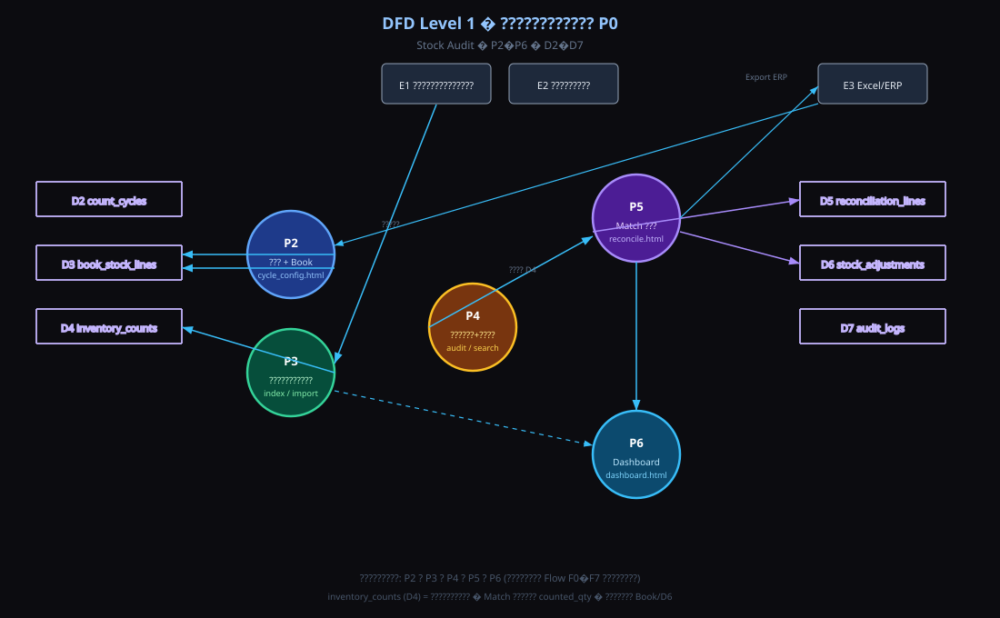
| กระบวนการ | หน้าเว็บ | คลังข้อมูล |
|---|---|---|
| P1 จัดการ SKU Master | sku_master.html | D1 sku_master_data |
| P2 สร้างรอบ + อัปโหลด Book | cycle_config.html | D2 count_cycles · D3 book_stock_lines |
| P3 บันทึกผลนับ | index.html · import_counts.html | D4 inventory_counts |
| P4 ผูกรอบ + ตรวจสอบ | cycle_config · audit_check.html · count_search.html | D4 (อัปเดต cycle_id / แก้ตำแหน่ง) |
| P5 Match ยอด + ปรับยอด | reconcile.html | D5 reconciliation_lines · D6 stock_adjustments |
| P6 รายงานภาพรวม | dashboard.html | อ่าน D4, D5 + สรุป RPC |
Flow ลำดับ Data Flow ทั้งระบบ (อ่านตามลำดับนี้)
✓ แผนภาพลำดับ Flow — assets/manual/data-flow-sequence.svg
คู่มือฉบับนี้จัดตามลำดับการไหลของข้อมูล ไม่ใช่ลำดับเมนู — แต่ละขั้นระบุ Flow ID, กระบวนการ DFD, ตารางที่เกี่ยวข้อง และหน้าเว็บ
| Flow | ขั้นตอน | DFD | หน้าเว็บ | ข้อมูลหลัก |
|---|---|---|---|---|
| F0 | ตั้งค่า Supabase + SQL | — | settings | การเชื่อมต่อ |
| F1 | นำเข้า SKU Master | P1 | sku_master | D1 |
| F2 | สร้างรอบ + อัปโหลด Excel Book | P2 | cycle_config | D2, D3 |
| F3 | บันทึกผลนับ (สแกน / Import) | P3 | index · import | D4 |
| F4 | ผูก cycle_id + ตั้งรอบ active | P4 | cycle_config | D4.cycle_id |
| F5 | ตรวจสอบตำแหน่ง + ค้นหาผลนับ | P4 | audit · ค้นหา | D4 |
| F6 | Match ยอด + ปรับยอด + Export | P5 | reconcile | D5, D6 |
| F7 | Dashboard สรุป | P6 | dashboard | อ่านทุกตาราง |
cycle_id อัตโนมัติF0 ตั้งค่าระบบ — Supabase + SQL
เชื่อมต่อ Supabase และเตรียมฐานข้อมูลก่อนใช้ Match
9.1 เชื่อมต่อ Supabase
- กรอก Project URL และ anon public key
- กดบันทึก — เก็บใน localStorage
- ตรวจ badge หน้านับ — สีเขียว = เชื่อมต่อแล้ว
9.2 SQL ที่ต้องรัน (ครั้งแรก)
docs/sql/002_reconciliation_schema.sql— ตารางรอบ, Book, Match, adjustmentsdocs/sql/003_cycle_all_warehouses_date_range.sql— คลังทั้งหมด + ช่วงวันdocs/sql/004_dashboard_submission_buckets.sql— (แนะนำ) RPC กราฟ Dashboard
F1 SKU Master (P1 → D1)
จัดการตาราง sku_master_data — รายการ SKU ที่คาดว่าจะนับในแต่ละคลัง ใช้คำนวณ KPI 「ยังไม่ได้นับ」「นับแล้วใน Master %」
1.1 เครื่องมือบนหน้า
- เลือกคลัง — ตึกกันตนา / หน้าไลฟ์ / คลังอะไหล่ (Master แยกต่อคลัง)
- อัปโหลด Excel — นำเข้ารายการ SKU (คอลัมน์หลักคือรหัส SKU)
- Preview ก่อนยืนยัน — ตรวจจำนวนแถว / แถวซ้ำ / คอลัมน์ไม่ครบ
- บันทึก (Upsert) — อัปเดตแถวเดิมหรือเพิ่มใหม่ตาม SKU+คลัง
- ดู/ลบรายการในตาราง — จัดการ Master หลังนำเข้า
1.2 ขั้นตอนนำเข้า SKU
- เลือกคลัง ที่ต้องการ
- เลือกไฟล์ .xlsx ที่มีคอลัมน์ SKU
- ตรวจ preview — แก้ไฟล์ถ้ามีแถว error
- กดยืนยันนำเข้า — รอจนเสร็จ
1.3 สินค้าใหม่ (นอก Master)
SKU ที่นับแล้วแต่ไม่อยู่ใน Master จะไม่นับใน % ความคืบหน้า แต่แสดงที่หน้า นับสต็อก ในแบนเนอร์「สินค้าใหม่」— Export ไปเพิ่มใน Master ภายหลัง
F2 รอบนับ + ไฟล์ Excel Book (P2 → D2, D3)
ศูนย์กลางรอบนับ — สร้างรอบ อัปโหลดยอด Excel (Book) ผูกผลนับ ตั้งรอบ active
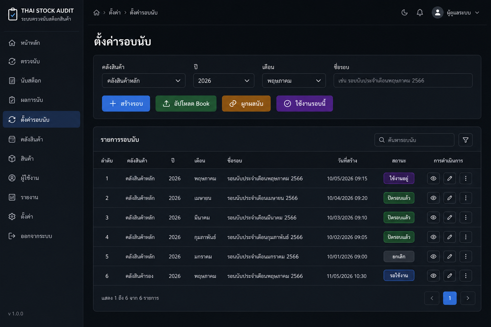
6.1 สร้างรอบใหม่
- คลังเดียว — ตึกกันตนา / หน้าไลฟ์ / คลังอะไหล่
- หลายคลัง — เลือก checkbox หลายคลัง (เก็บ warehouse แบบ
คลัง1|คลัง2) - คลังทั้งหมด — Book ไฟล์เดียวรวมทุกคลัง · ต้องกำหนดวันเริ่ม-สิ้นสุด
- ปี + เดือน · ช่วงวันที่นับ (ว่าง = ทั้งเดือน)
- ชื่อรอบ (ไม่บังคับ)
6.2 อัปโหลดไฟล์ Excel (Book)
- เลือกรอบในตาราง
- เลือกไฟล์ Excel (SKU + จำนวน)
- ดู preview — แถว ไม่ผ่าน (ไม่มี SKU / จำนวนไม่ถูก) แสดงตารางแยก
- กดอัปโหลด — เข้า
book_stock_lines
6.3 ผูกผลนับ + ใช้งานรอบ
ผูกผลนับกับรอบนี้ — อัปเดต cycle_id ตามช่วงวัน (ไม่แก้ qty) · ใช้งาน — บันทึก active ใน localStorage สำหรับ insert ใหม่
หน้าหลัก index.html — บันทึก inventory_counts แบบ real-time
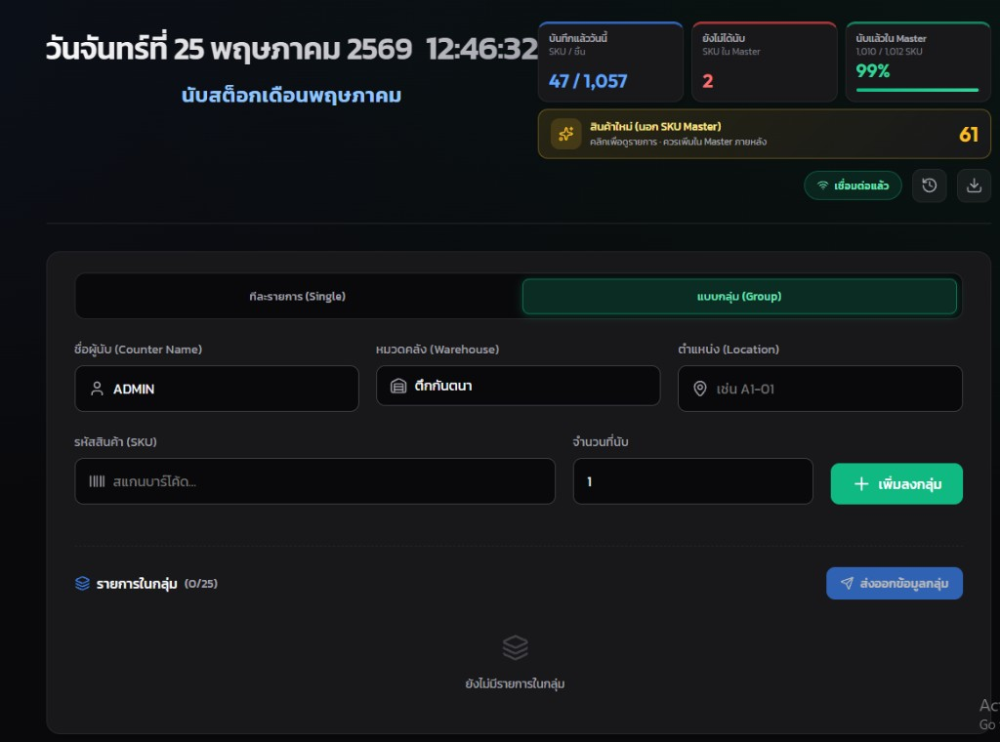
2.1 KPI
| การ์ด | ความหมาย |
|---|---|
| บันทึกแล้ววันนี้ | จำนวนที่บันทึกวันนี้ |
| ยังไม่ได้นับ | คลิกเปิด drawer รายการใน Master ที่ยังไม่นับ |
| นับแล้วใน Master | % ความคืบหน้าเทียบ Master |
| สินค้าใหม่ | นับแล้วแต่ไม่อยู่ใน Master |
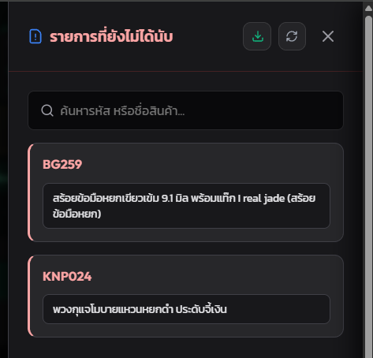
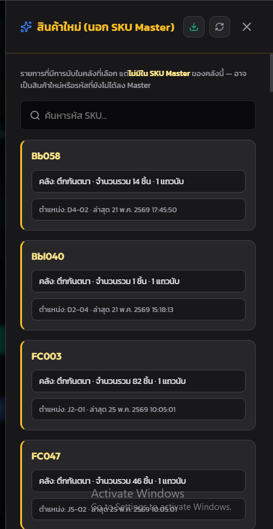
2.2 ฟอร์มและโหมด
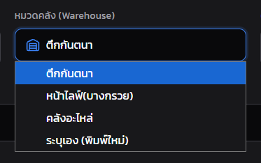
- Single บันทึกทันที
- Group สะสมสูงสุด 25 รายการแล้วส่งออกกลุ่ม

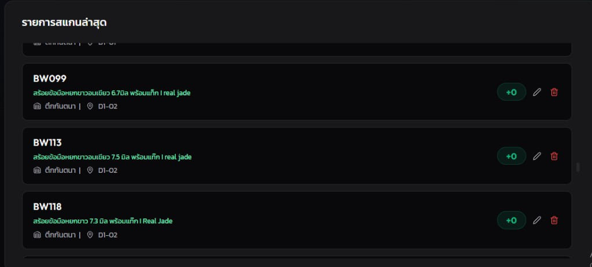
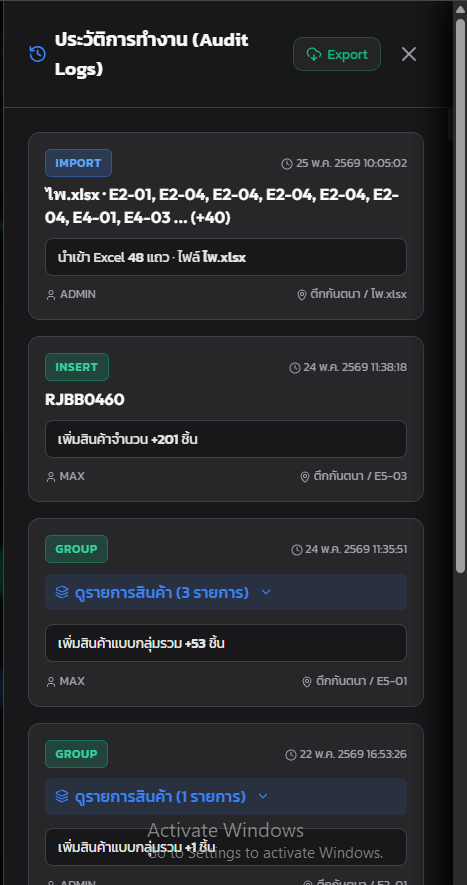
import_counts.html — นำเข้า Excel จำนวนมาก
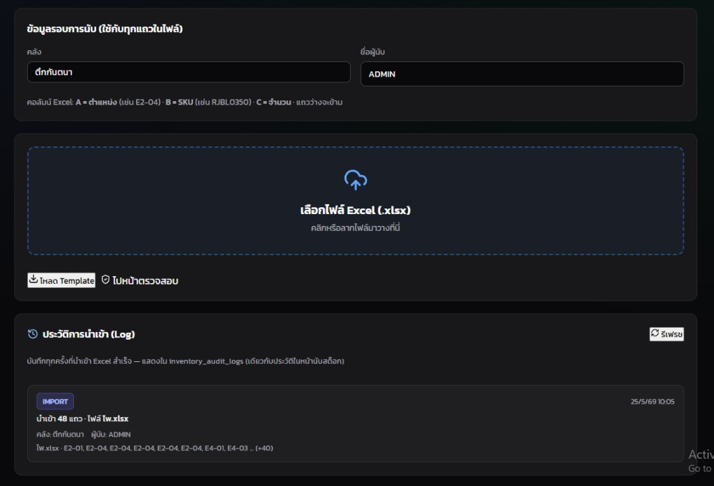

คอลัมน์ A=ตำแหน่ง B=SKU C=จำนวน · มี Log ประวัติ · นำเข้าเฉพาะแถวพร้อมนำเข้า
F4 ผูกผลนับกับรอบ + Active Cycle
ขั้นตอนนี้ทำที่ ตั้งค่ารอบ (cycle_config.html) หลัง F3 — อัปเดตเฉพาะ cycle_id ใน inventory_counts ตามช่วงวันที่ (ไม่แก้ qty)
- เลือกรอบในตาราง → กด ผูกผลนับกับรอบนี้
- กด ใช้งานรอบนี้ — บันทึก active ใน localStorage สำหรับ insert ใหม่
audit_check.html — ตรวจก่อนปิดรอบ
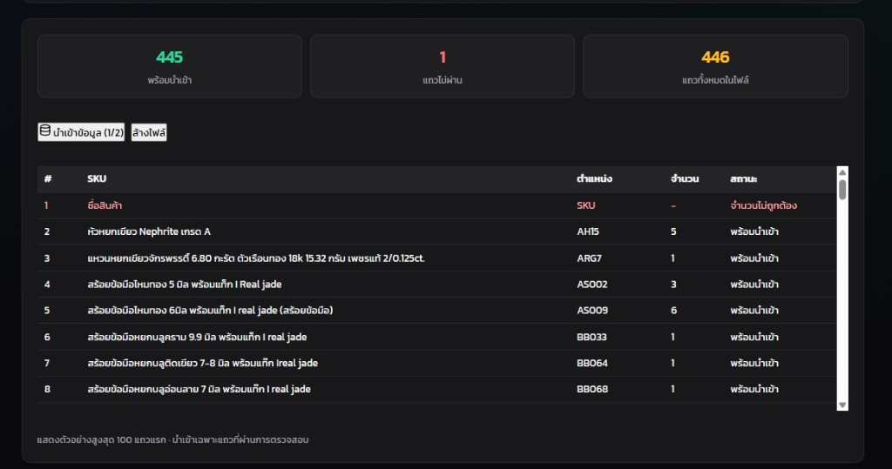
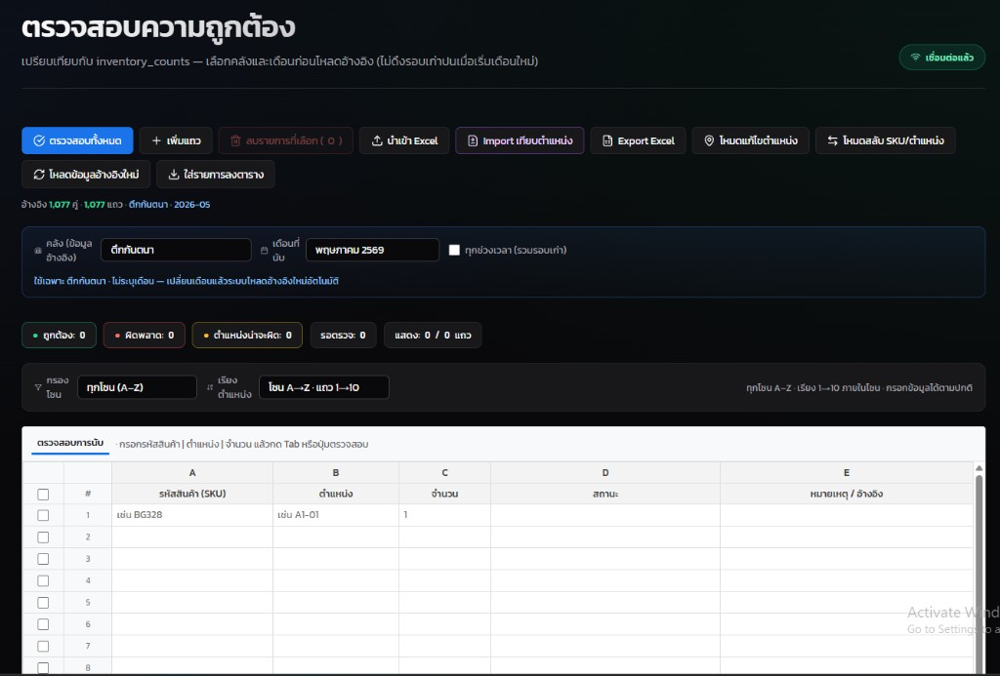
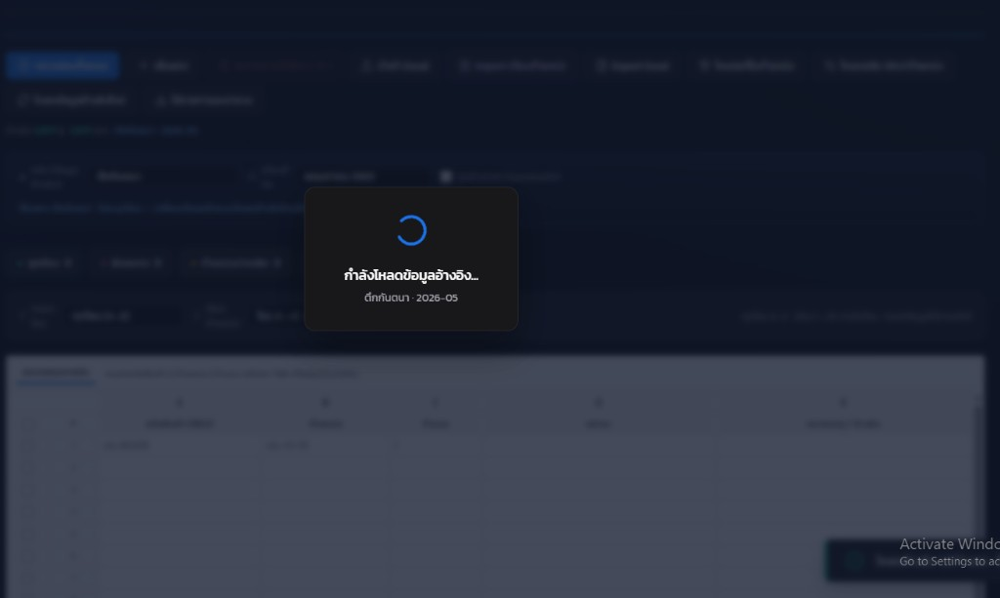
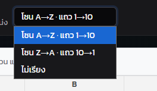
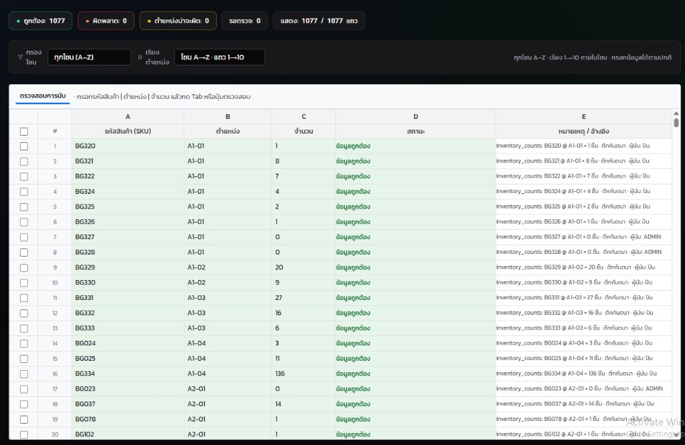
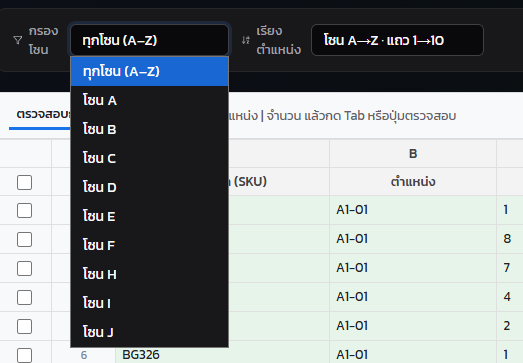
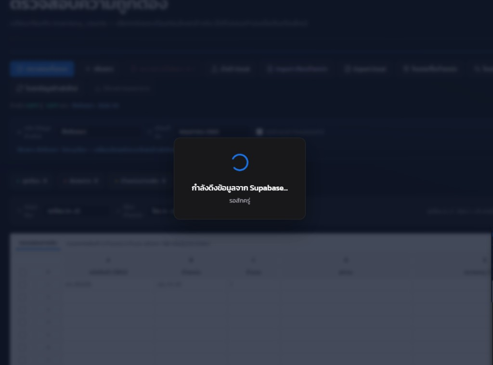
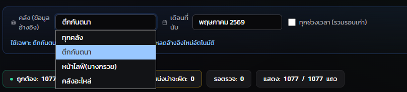
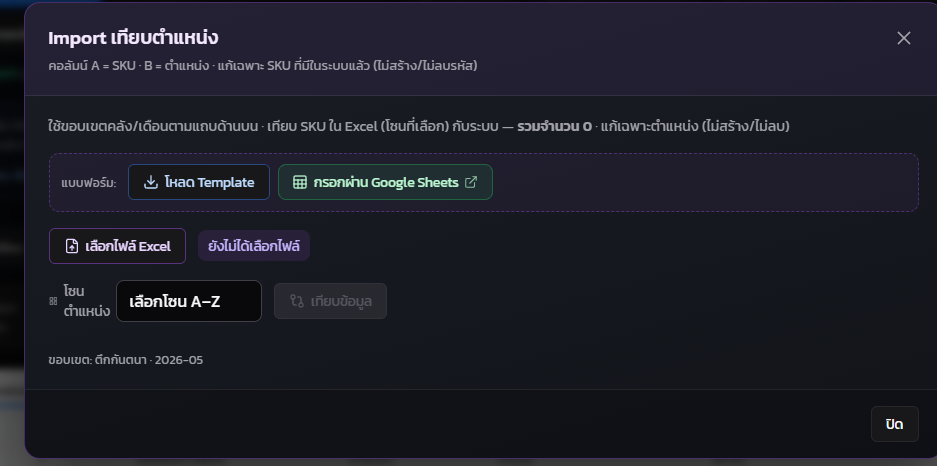
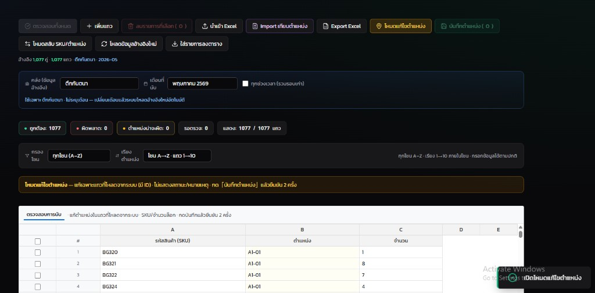
ปุ่ม: ตรวจสอบทั้งหมด · เพิ่มแถว · ลบ · Import · Import เทียบตำแหน่ง · Export · โหมดแก้ไข · โหมดสลับ
count_search.html — ค้นหา inventory_counts
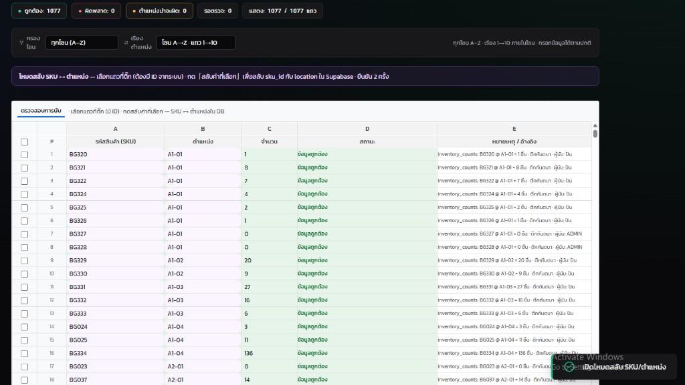
กรอง: คำค้น · คลัง · เดือน · ตำแหน่ง · ผู้นับ · ปุ่มค้นหาและส่งออก
F6 Match ยอด (P5 → D5, D6)
เทียบ ไฟล์ Excel (ยอดก่อนนับ) กับ ผลนับรวม ต่อ SKU ในรอบที่เลือก
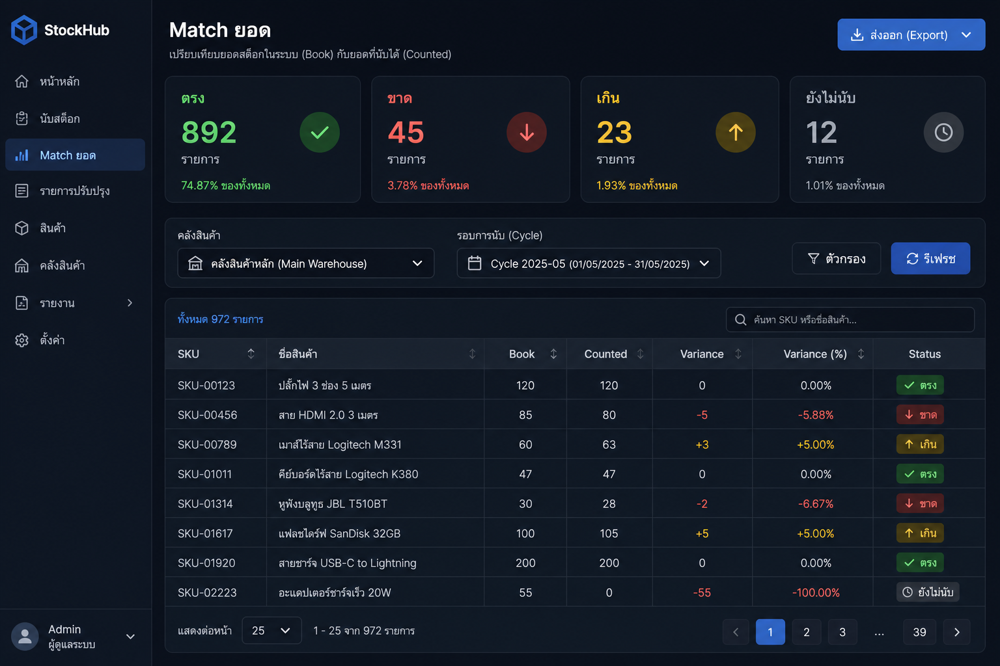
7.1 เครื่องมือ
- เลือกคลัง + รอบ
- คำนวณ Match / Refresh — เรียก RPC อัปเดต
reconciliation_lines - KPI — ตรง · ขาด · เกิน · ยังไม่ได้นับ · นับเจอแต่ไม่พบใน Excel
- ตัวกรองสถานะ ในตาราง
- ปรับยอด (draft) — บันทึกที่
stock_adjustmentsฝั่ง Excel - Export Excel
7.2 สถานะและคอลัมน์
| สถานะ | ความหมาย |
|---|---|
| ตรง | ผลนับ = Excel ใช้เทียบ (หลังปรับ) |
| ขาด | นับ < Excel |
| เกิน | นับ > Excel |
| ยังไม่ได้นับ | มีใน Excel ไม่มีผลนับ |
| นับเจอ แต่ไม่พบSKUในExcel | มีผลนับ ไม่มีใน Excel |
7.3 สูตร
Excel ใช้เทียบ = SUM(book_qty) + SUM(adjustments applied) ผลนับ = SUM(inventory_counts.counted_qty) ← อ่านอย่างเดียว variance = ผลนับ − Excel ใช้เทียบ
F7 Dashboard (P6)
ภาพรวม 2 ชั้น: การนับและความเร็วส่งงาน และ Match ยอดตามรอบ
8.1 แท็บการนับและความเร็วส่งงาน
- กรองคลัง · เดือน/วันที่
- เลือกรอบนับ — ปุ่ม「รอบ active / ล่าสุด」ใช้รอบจาก localStorage หรือรอบล่าสุด
- KPI อัตราการส่งงาน = รายการ/นาที (ไม่ใช่ % เทียบ Master)
- กราฟเส้น — bucket 1 / 10 / 30 นาที / 1 ชม.
8.2 แท็บ Match ยอด (รอบ)
- ต้องเลือกรอบ — ดึงจาก
v_cycle_reconciliation_summary - กราฟ doughnut สัดส่วนสถานะ · Top SKU ขาด/เกิน
- ลิงก์ไป
reconcile.html?cycle=...
SQL เสริม: docs/sql/004_dashboard_submission_buckets.sql สำหรับกราฟเส้นเร็วขึ้น
ER ER-Diagram (โครงสร้างตาราง)
ความสัมพันธ์ตาราง — สอดคล้อง DFD Level 1
📄 ภาคผนิ: รูปแบบ Excel
Import นับ
| คอลัมน์ | ชื่อที่รองรับ | บังคับ |
|---|---|---|
| SKU | SKU, sku, รหัสสินค้า | ใช่ |
| ตำแหน่ง | location, ตำแหน่ง | ใช่ |
| จำนวน | qty, จำนวน, quantity | ใช่ |
Book (cycle_config)
SKU + จำนวน (book_qty) — แถวไม่ผ่านจะไม่นำเข้า
SKU Master
คอลัมน์หลัก SKU — แยกไฟล์ต่อคลัง
? คำถามที่พบบ่อย
ทำไม % ไม่ถึง 100?
% จาก SKU ใน Master เท่านั้น — SKU นอก Master ไม่รวมใน %
ข้อมูลเดือนก่อนหายไหม?
ไม่หาย — แยกด้วย cycle_id / เดือน
กดใช้งานรอบ vs ไม่กด?
กด = insert ใหม่ได้ cycle_id อัตโนมัติ · ไม่กด = ต้องผูกภายหลัง
badge แดง?
ตรวจหน้าตั้งค่า URL/key และ Supabase project
error ตารางไม่มี?
รัน SQL 002 ก่อน
Import ซ้ำ?
ได้แถวซ้ำ — dedupe หรือลบใน DB
10 หน้าคู่มือนี้ (user_manual.html)
10.1 โหมดอ่านอย่างเดียว
อ่านเนื้อหาและรูปที่ใส่ไว้แล้ว · ไม่มีปุ่ม Browse · แก้ข้อความไม่ได้
10.2 โหมดแก้ไขคู่มือ
- คลิกข้อความที่มีเส้นประเมื่อโฟกัส — แก้คำแบบ Word
- กด Browse รูป ใต้ช่องภาพ — เลือกไฟล์จากเครื่อง · ปุ่ม Browse จะหายเมื่อมีรูปแล้ว
- ใช้ เปลี่ยนรูป เพื่ออัปเดตภาพเดิม
- บันทึกอัตโนมัติในเบราว์เซอร์ (localStorage)
- สำรอง — ดาวน์โหลด JSON · รีเซ็ต — กลับคู่มือเริ่มต้น